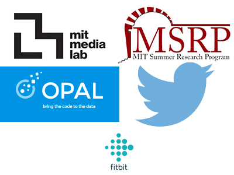
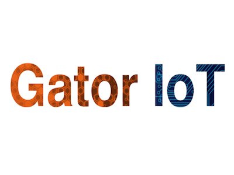
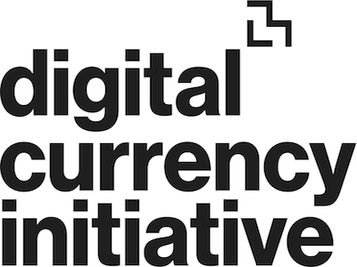
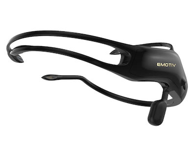

Projects
Here are some projects that I've worked on.

Rideboard
Long Distance Ride Sharing

Brain Drone Race
World's First Brain Drone Race

OPAL
Bringing code to the data

GatorIoT
IoT Projects Developed for UF Through My Organization

Digital Currency Initiative
My Involvement With DCI

Engagement
Using a BCI To Measure Focus and Engagement